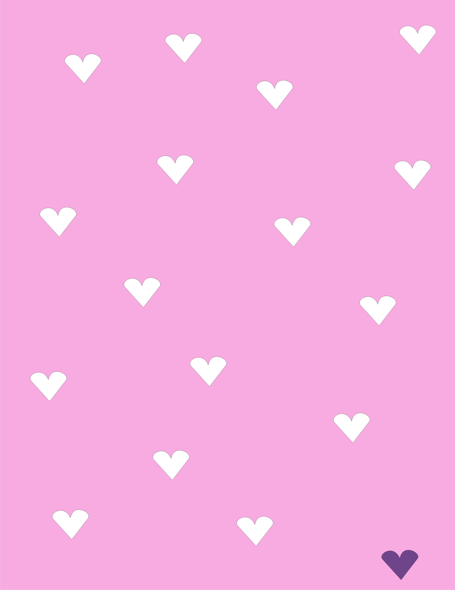

| S/N | Name | Contact | Matric No |
|---|---|---|---|
| 1 | Akinlade Khairat | 09016482 | 145764 |
| 2 | Akinlade kofo | 08067392 | 146233 |
| 3 | Ogunlusi Miki | 0900007 | 146782 |
| 4 | Dauda Maryam | 07089123 | 148634 |
| 5 | Willson Milason | +2346543 | 149033 |
Dr (Mrs.) Priscilla told us that NIOMR had 7 research departments which now has increased to 11 research departments which are Fish
We took off from school around 7: 55am and arrived at the Institute around 11:30am. As we arrived at NIOMR ,
Secondly, We were taken to the Comodo channel where we met Mr. Shelle R.O.D who is a member of the Physical and chemical oceanography
